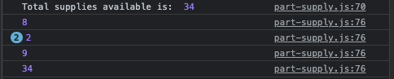

Week 3 assignment
Check the console...
With reference to the answer option 2 to the question #8, when I run the code on the line 76, which is commented out, I see this blue circle in front of the number 2. What does this mean?
